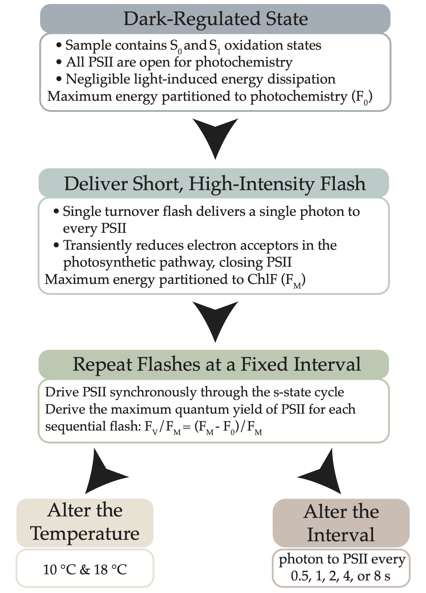

Photosynthesis in Near Darkness?
Effects of Temperature and Frequency of Photon Delivery on Wasteful Slippage of the S-State Cycle in Photosystem II
Natasha M. Ryan
Maximilian Berthold
Douglas A. Campbell
Mount Allison University Biology Department
Background
The accepted lower limit of the photic zone is 1% of surface irradiance, equivalent to 1 photon reaching a PSII every ~0.03 seconds1. Some arctic diatoms achieve net C uptake with 1 photon only reaching a PSII every 0.6-60 seconds2.
Comparing the persistence of S-state synchronicity in temperate and arctic diatoms may help explain how arctic diatoms exploit extremely low light, by limiting wasteful slippage.
Energy Distribution
Light energy absorbed by the photosynthetic pigments of PSII (primarily chl-a) is distributed variably among three pathways3:
- Photochemistry (photochemical quenching of ChlF)
- Dissipation as heat (non-photochemical quenching of ChlF)
- Re-emission at longer wavelengths as fluorescence (ChlF)
S-State Cycle
A complete water oxidation cycle during oxygenic photosynthesis requires the absorption of four photons and the successive accumulation of four oxidizing equivalents456:
Figure 1: Pathway of S-state cycling and the electron transfer chain in PSII. Successive PSII charge separations extract electrons from the Mn cluster of the water-oxidizing/oxygen-evolving complex, inducing four increasingly oxidized states. Following the accumulation of four oxidizing equivalents, 2 H2O are oxidized to 1 O2.
ChlF varies between S-states since the free energy of the water-oxidizing complex depends on the number of electrons removed7. A loss of charge separation through recombination desynchronizes the S-state cycle, dampening the periodic changes in ChlF, and causing wasteful slippage.
Objective
Use a single-turnover variable chlorophyll fluorescence (ST-ChlF) approach to evaluate the loss of synchronization of the S-state cycle at different frequencies of photon delivery and temperatures.
Methods
Use Solisense apparatus and Lift software to deliver short, highly intense pulses of light to diatoms (Thalassiosira pseudonana) in a temperature-controlled cuvette3.

Figure 2: Single-turnover variable chlorophyll fluorescence approach for evaluating phytoplankton photosynthesis
Results

Figure 3: Maximum quantum yield (Fv/Fm) of PSII in temperate diatoms exposed to single-turnover flashes spaced at 0.5, 1, 2, 4, and 8 seconds at 10 and 18 degrees Celsius.
As flash spacing increases, we observe fewer synchronous S-state cycles before the periodicity is dampened. This indicates that longer periods of time between flashes increase the incidence of recombination and wasteful slippage.
We hypothesized that recombination would decrease with temperature since recombination processes are temperature sensitive. Initial Fast Fourier Transform analysis (M. Berthold) indeed indicates that the diatoms at 10°C maintain a synchronous S-state cycle for longer, and therefore may maintain productive electron transport under lower light levels.
References
1.
Raven, J. A., Kübler, J. E. & Beardall, J. Put out the light, and then put out the light. Journal of the Marine Biological Association of the United Kingdom 80, 1–25 (2000).
2.
Randelhoff, A. et al. Arctic mid-winter phytoplankton growth revealed by autonomous profilers. Science Advances 6, eabc2678 (2020).
3.
Schuback, N. et al. Single-Turnover Variable Chlorophyll Fluorescence as a Tool for Assessing Phytoplankton Photosynthesis and Primary Productivity: Opportunities, Caveats and Recommendations. Frontiers in Marine Science 8, (2021).
4.
Gates, C., Ananyev, G. & Dismukes, G. C. Realtime kinetics of the light driven steps of photosynthetic water oxidation in living organisms by ‘stroboscopic’ fluorometry. Biochimica et Biophysica Acta (BBA) - Bioenergetics 1861, 148212 (2020).
5.
Zaharieva, I. & Dau, H. Energetics and Kinetics of S-State Transitions Monitored by Delayed Chlorophyll Fluorescence. Frontiers in Plant Science 10, (2019).
6.
Dau, H. & Haumann, M. Time-resolved X-ray spectroscopy leads to an extension of the classical S-state cycle model of photosynthetic oxygen evolution. Photosynthesis Research 92, 327–343 (2007).
7.
de Wijn, R. & van Gorkom, H. J. S-state dependence of the miss probability in Photosystem II. Photosynthesis Research 72, 217–222 (2002).